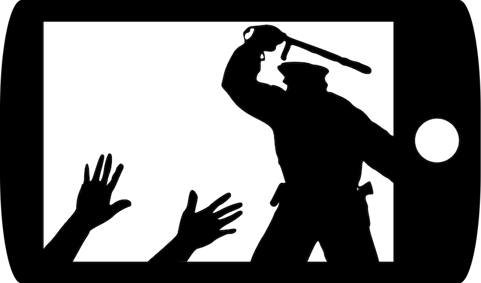

2021-04-22 08:00

The United States has over a thousand police killings each year, and many of them are of unarmed Black and brown people. In fact, America has more daily or weekly police killings than some European nations have homicides from all causes combined in a single year. And yet Americans — and I mean the majority, you, my fellow white Americans — are in deep denial of both facts and the reasons for all this spilled blood. Both the Chauvin trial and a recent report documenting the extent of racial profiling by the New Bedford Police have received a tremendous amount of blowback from white people. So I’d like to address both in this rather long essay.
Police serving American cities ought to be able to bring more to the door than a service weapon, but that’s apparently what White America wants. Those serving the public ought to have skills in psychology, first aid, social services, conflict resolution, and de-escalation. Here in Massachusetts all school teachers are expected to have masters degrees in order to be “highly qualified.” Police officers, on the other hand, are more likely to pursue memberships at health clubs and shooting ranges than college credits. And let’s face it: we hire police for their muscle, with a clear preference for combat veterans skilled in the arts of war.
The brutal truth is that the real function of the policing White America wants is evident in almost every police interaction. There’s no sugarcoating it. States hire cops for brutality — to compel immediate compliance with the law. But it’s not working. Or perhaps it’s working so well that in an age of ubiquitous cameras police forces have now exposed this brutality and, in the process, the extent of America’s police state.
For this reason, communities all over the United States are considering reallocating police funding to the essential human services now being mishandled by police. The idea is that targeting mental health and drug crises with professional skills, not Glocks and Tasers, will prevent some of this carnage. And relieving police of routine traffic control is likewise intended to reduce the pretextual (translation: Constitutionally dubious) stops that all too often result in a police shooting. But this is not enough. America also needs to face up to its legacy of policing born of slave-catching. After January 6th, though, I have a low opinion of White America’s ability for self-reflection.
America’s police, at least in Black and brown communities, are not there “to protect and to serve” so much as they are there to maintain old, discredited, unconstitutional models of “broken windows” and “stop and frisk” policing. You can dress it up — as the New Bedford Police Department has at various points — with euphemisms like “High Energy Patrols” or “Walk and Talk” or the much-abused “community policing.” But what police, many with recent experience in Iraq and Afghanistan, really mean by “community policing” is actually more akin to occupation and pacification of the enemy.
This “us versus them” attitude, well-entrenched in police culture and seen daily in police Tweets and Facebook posts (like the Fall River Police Department’s post on George Floyd), and reinforced by bad hiring, the rare firing, little discipline, minimal oversight, virtually nonexistent accountability and vague operational policies — none of this can be fixed overnight. Communities need to start from scratch to redefine how they want to be policed — that is, if they really want to stop the bloodletting.
The media may prefer neutral terms like “controversial” to describe the unconstitutional stops and patdowns, the pretextual traffic stops, the 24/7 surveillance, the “predictive policing,” and the racial profiling that accompany a police occupation. But there is nothing “controversial” about it. It is just plain wrong. It is illegal and it’s got to stop. Otherwise America will remain little more than a police state, especially for people of color.
Police, naturally, resist data collection and reporting obligations that might draw attention to racist practices. So, it is often up to community groups and independent researchers, using data only very reluctantly and resentfully provided by the police themselves which is intentionally incomplete or obfuscated — data they were compelled to produce by public information requests — to step into the breach and study patterns of racist policing. The CFJJ report was just that.
Last week’s Citizens for Juvenile Justice report on NBPD field police observations involving nearly 5,000 individuals showed that New Bedford Police have never stopped using racial profiling. CFJJ took some heat from the NBPD, the police union, and the Far Right for reporting on precisely what the NBPD had given them. But a 2018 Organizational Assessment study of the NBPD noted that the NBPD doesn’t collect accurate data because it just doesn’t care: “Obtaining accurate data was a challenge […] The multitude of errors present in all areas of the data indicate a lack of supervision and oversight both in communications and patrol. […] A quick review of some of the entries […] shows the errors in the data along with a disregard for the importance of collecting accurate data…”
To this date the NBPD has failed to make numerous recommendations in that 2018 Organizational Assessment of the NBPD commissioned by the Mayor, which also interviewed members of the community at large. And that report followed a 2015 report by the ACLU documenting the NBPD’s racist policing, and the 2012 Malcolm Gracia shooting — itself the result of racial profiling. Nothing has changed in at least a decade because the NBPD simply rejects reform.
From the same 2018 Organizational Assessment: “There is little evidence of a team approach, and there is significant resistance to change within the patrol division. The command staff does not appear to readily embrace innovation and often gravitated to sentiments such as ‘this is how we have always done it’ and ‘things will never change.’”
The 2018 report also noted that officer discipline cases had languished for many years and that only under the leadership of the most recent police chief was any effort made to address the backlog of disciplinary cases. Naturally, the police union retaliated by forcing a “no confidence” vote on the chief.
It’s clear that change is not going to come from within the nation’s police forces, city councils, or the nation’s mayors. It seems clear that change will be imposed upon the nation’s police by legislation like H.R.1280 - the George Floyd Justice in Policing Act of 2021, and by eliminating a legal doctrine called Qualified Immunity, which confers impunity to police for even the most egregious acts. For this reason, H.R.1470, the Ending Qualified Immunity Act, was filed by Massachusetts Rep. Ayanna Pressley.The goal is to eliminate outrageous deviations from normal criminal justice norms. Police shouldn’t get concierge service in the nation’s courts.
As much as New Bedford’s mayor and police officials might like to pretend that New Bedford is unique, the city’s police force is no different from most in America. If you were outraged at Derek Chauvin kneeling on George Floyd’s neck in front of Cup Foods until he died, while several other officers stood around watching, then you would be equally outraged at watching the video of officer Paul Hodson kneeling on Erik Aguilar in front of New Bedford’s Extra Mart until he too was dead, while several other officers made no attempt to resuscitate Aguilar. The striking difference between these two cases is that, while we all watched Chauvin led off in handcuffs to prison, Hodson remained on the NBPD payroll until he was finally prosecuted — not for killing Aguilar but on federal child pornography charges. And in both killings it was not just one officer demonstrating callous disregard for human life. It was all of them.
Let me repeat that. It was all of them. There are no bad apples in the nation’s police forces. The apple barrels are so rotten that good apples don’t stand much of a chance of preserving individual integrity. This is why change must be sweeping and why it must be imposed. Police are incapable of reforming themselves.
But digging deeper, where does such contempt for non-white life come from, and why is it so easily excused? Most of White America completely rejects police accountability. To listen to many of my fellow white folks’ own words, America’s overwhelmingly white police forces are there to keep non-white “mobs” from overrunning white neighborhoods. Referencing the “carnage” that Donald Trump referred to in his racist inauguration speech, White America also sees the non-white “mob’s” demands for justice as an equal threat to their supremacy. The “Us versus them” mentality of police extends to the “Us versus them” inherent in a race war. A race war that White America seems all to eager to have.
Newsmax host Rob Schmitt called Derek Chauvin a “sacrifice to the mob.” Sheriff Tom Hodgson’s pal Michelle Malkin used almost the same words: “Chauvin was sacrificed.” Donald Trump’s friends the Proud Boys circulated a post, “Derek Chauvin Did Nothing Wrong.” Georgia Congresswoman with No Committees Marjorie Taylor Greene blamed Chauvin’s conviction on Black people — BLM particularly, which has “proven itself to be the most powerful domestic terrorist organization in our country. After Maxine Waters’ threats, could there have been any other verdict?” Fox News’ resident Alt-White host Tucker Carlson also blamed the guilty verdict on Black terror in characteristically offensive terms: “The jury in the Derek Chauvin trial came to a unanimous and unequivocal verdict Tuesday afternoon: ‘Please don’t hurt us.’”
That same white supremacy on display following the Chauvin verdict was also on display following the release of the CFJJ report on New Bedford police racial profiling. A lot of it came from WBSM, especially from Barry Richard, whose latest includes the meaningless bromides: “the system works when given a chance” and “a nation divided must learn to heal.” In a post attacking CFJJ’s report on racial profiling Richard accused the mayor of failing to defend the NBPD, and in another he called police critics “malcontents who threaten to destabilize […] society.” Richard wrote that CFJJ was “attempting to create racial division where it does not exist and is looking to drive a wedge between the minority communities and the police […] — people who have co-existed in relative peace and harmony for so many years.” Richard would have you believe that there are no local critics of New Bedford police, only outside agitators. One wonders why Richard didn’t write reams about the many out-of-staters who invaded the nation’s Capitol on January 6th.
New Bedford City Councilor Brian Gomes — the New Bedford Councilor representing the Police Ward — was featured in another of Richard’s posts, calling the CFJJ report “garbage” and promising to introduce a City Council motion to stand in support of the NBPD. Gomes, the same Councilor who introduced a resolution to reject ending qualified immunity, who wanted to buy drones to surveil New Bedford residents, and who supported Southern-style chain gangs, also accused CFJJ of trying to “stir things up” in the City. Once again, no Dixie-style defense of local law enforcement would be complete without calling critics “outside agitators.”
But the CFJJ report resonates with a lot of people in New Bedford, including most of the groups which sponsored the CFJJ webinar. Including old-time observers of local politics like former Standard-Times editor Jack Spillane, who now hosts a website on New Bedford politics. In one of his latest pieces, Spillane noted that, even if the CFJJ study made assumptions that the NBPD could find fault with, the fact remains that “it would be a very good thing if for just once all of us who live here would acknowledge the serious mistrust that exists between large segments of the New Bedford’s minority community and the police department.”
Spillane also noted that the Police based their entire refutation of CFJJ’s report on a questionable discrepancy: “The police statement took pains to paint as serious errors what to others could easily be construed as simple disagreements over what numbers should be counted. […] To be fair, whatever errors are in the report because of multiple counting would apply to the numbers of both Black and non-Black residents, both Hispanic and non-Hispanic individuals. So it’s hard to see how its conclusions would be any different than they were.”
You can view a video of the Zoom presentation of the CFJJ report here, the report itself here, and the slides used in CFJJ’s presentation here. You can also read CFJJ’s reply to the New Bedford Police criticism here. But it’s hard to argue with the numbers — particularly since they came from the police themselves and they only confirm what a similar 2015 study of NBPD field observations showed: New Bedford cops employ racial profiling on a grand scale.
I will cite Spillane again because he sums it up perfectly: “Flawed or not, the Citizens for Juvenile Justice report was a badly needed and serious effort to raise issues about the equity of policing in New Bedford. It was a long overdue attempt to start a discussion with the city’s political and law enforcement establishment about what often amounts to an occupying-force approach to policing in New Bedford. It is an attempt at a data-driven study that the city itself should have done long ago.”
Local police defenders may prefer denial and smears of police critics to actually contending with the data, but that can’t erase the fact that America has a policing problem tied to a long racist legacy. New Bedford is just one of thousands of local police forces that share those problems and that legacy. New Bedford can fix the problems locally — or wait for change to be imposed. After 70 years on this planet, and knowing more than a little about my “people,” I guarantee you it will be the latter.